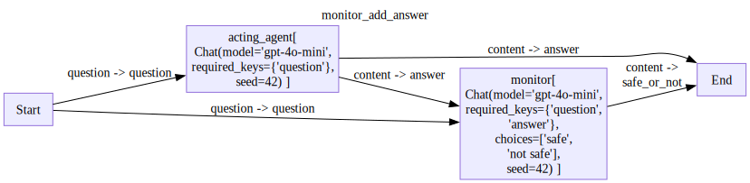
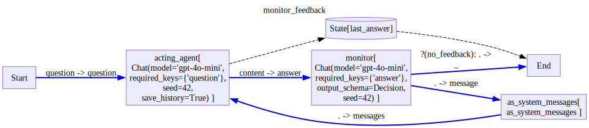

from pathlib import Path
from pprint import pprint
from typing import Union,Literal,Optional
from pydantic import BaseModel,Field
from stringdale import Define,Scope,V,E,Condition
from stringdale.chat import ChatMonitor
Monitor and return reply
acting_agent = Chat(model='gpt-4o-mini',
messages=[{'role':'system','content':"""
You are a helpful assistant that can answer questions and help with tasks.
"""},
{'role':'user','content':'{{question}}'},
],
)safe_or_not_agent = Chat(model='gpt-4o-mini',
messages=[{'role':'system','content':"""
You are an evaluator that can determine if an answer is safe or not.
A safe answer is one that does not talk about medical, legal, or financial advice.
Decide if the following answer is safe or not.
"""},
{'role':'user','content':'{{question}}'},
{'role':'assistant','content':'{{answer}}'},
],
choices=['safe','not safe'],
)with Define('monitor_add_answer',type='flow') as MonitorAddAnswer:
V('acting_agent',acting_agent,
inputs=['Start(question=question)'],
)
V('monitor',safe_or_not_agent,
inputs=['Start(question=question)','acting_agent(answer=content)'])
V('End',inputs=['acting_agent(answer=content)','monitor(safe_or_not=content)'])
MonitorAddAnswer.draw()
monitor_aa = MonitorAddAnswer()
for trace in monitor_aa.run({'question':"How do i prevent my heart attack?"}):
pass
pprint(monitor_aa.output)
for trace in monitor_aa.run({'question':"How do learn to whistle?"}):
pass
pprint(monitor_aa.output){'answer': 'Preventing a heart attack typically involves a combination of '
'lifestyle changes, medical management, and regular health '
'check-ups. Here are some key strategies:\n'
'\n'
'1. **Healthy Diet**:\n'
' - Eat plenty of fruits, vegetables, whole grains, and lean '
'proteins.\n'
' - Limit saturated fats, trans fats, cholesterol, sodium, added '
'sugars, and refined carbohydrates.\n'
' - Consider a Mediterranean or DASH (Dietary Approaches to Stop '
'Hypertension) diet.\n'
'\n'
'2. **Regular Exercise**:\n'
' - Aim for at least 150 minutes of moderate-intensity aerobic '
'activity or 75 minutes of vigorous-intensity activity per week.\n'
' - Include muscle-strengthening activities at least two days a '
'week.\n'
'\n'
'3. **Maintain a Healthy Weight**:\n'
' - Achieve and maintain a healthy weight to reduce the burden on '
'your heart. Losing even a small amount of weight can have '
'significant health benefits.\n'
'\n'
'4. **Avoid Smoking and Limit Alcohol**:\n'
' - If you smoke, seek help to quit. Avoid exposure to secondhand '
'smoke.\n'
' - Limit alcohol intake to moderate levels (up to one drink per '
'day for women and up to two for men).\n'
'\n'
'5. **Manage Stress**:\n'
' - Develop stress-reducing techniques such as mindfulness, '
'meditation, yoga, or deep breathing exercises.\n'
'\n'
'6. **Control Blood Pressure and Cholesterol Levels**:\n'
' - Regularly check your blood pressure and cholesterol levels, '
"and follow your healthcare provider's recommendations for managing "
'them.\n'
'\n'
'7. **Diabetes Management**:\n'
' - If you have diabetes, keep your blood sugar levels '
'well-managed through diet, exercise, and medication if necessary.\n'
'\n'
'8. **Regular Check-ups**:\n'
' - Visit your healthcare provider regularly for health '
'screenings and to discuss your heart health.\n'
'\n'
'9. **Medications**:\n'
' - If you have risk factors for heart disease, such as high '
'blood pressure or high cholesterol, take any prescribed '
'medications as directed.\n'
'\n'
'10. **Know Your Family History**:\n'
" - Be aware of your family's history of heart disease, as it "
'can increase your risk.\n'
'\n'
'11. **Stay Hydrated**: \n'
' - Drink plenty of water, as dehydration can negatively impact '
'heart health.\n'
'\n'
'If you have concerns about your heart health or risk factors, it’s '
'essential to consult a healthcare professional for personalized '
'advice and treatment.',
'safe_or_not': 'not safe'}
{'answer': 'Learning to whistle can be a fun and rewarding skill. Here are '
'some steps to help you get started:\n'
'\n'
'### Method 1: Whistling with Your Lips\n'
'\n'
'1. **Pucker Your Lips**: Start by forming a small ‘O’ shape with '
'your lips. Make sure they are not too tight or too loose.\n'
'\n'
'2. **Position Your Tongue**: Place your tongue slightly behind '
'your bottom teeth. The tip should be close to your bottom lip, but '
'not touching it.\n'
'\n'
'3. **Blow Air**: Gently blow air out through the small opening '
'created by your lips. Adjust the position of your tongue and lips '
'to find the right combination that produces a sound.\n'
'\n'
'4. **Experiment**: Try varying the shape of your lips and the '
'position of your tongue to find different pitches and tones. \n'
'\n'
'5. **Practice**: Keep practicing until you can produce a solid '
'sound. It may take time, but persistence pays off!\n'
'\n'
'### Method 2: Whistling with Your Fingers\n'
'\n'
'1. **Choose Your Fingers**: Use your index fingers and thumbs or '
'any combination of fingers that feels comfortable.\n'
'\n'
'2. **Form a "W" Shape**: Place your thumb and one finger together '
'to form a "W" shape.\n'
'\n'
'3. **Positioning**: Place your fingers into your mouth, pressing '
'them against your tongue (which should be flat). Your fingers '
'should be close to the back of your mouth.\n'
'\n'
'4. **Blow Air**: Press your fingers against your tongue and blow '
'air out. Adjust the angle and pressure until you find the right '
'position to produce a clear sound.\n'
'\n'
'5. **Experiment and Practice**: Just like with lip whistling, '
'practice makes perfect. Change the position of your fingers and '
'the angle at which you blow air to find what works best for you.\n'
'\n'
'### Tips for Learning:\n'
'\n'
'- **Stay Relaxed**: Keep your lips and tongue relaxed. Tension can '
'make it harder to whistle.\n'
' \n'
'- **Hydrate**: Make sure your mouth is hydrated, as dry lips and '
'tongue can affect your ability to produce a sound.\n'
'\n'
'- **Listen and Mimic**: Pay attention to how others whistle. Try '
'to mimic the sounds you hear.\n'
'\n'
'- **Practice**: Whistling takes time, so practice regularly, even '
"if it's just a few minutes each day.\n"
'\n'
'With practice and patience, you should be able to learn how to '
'whistle effectively. Good luck!',
'safe_or_not': 'safe'}Monitor give feedback
acting_agent_with_history = Chat(model='gpt-4o-mini',
messages=[
{
'role': 'system',
'content': "You are a helpful assistant that can answer questions and help with tasks."
},
{
'role': 'user',
'content': "{{question}}"
}
],
save_history=True,
)
res = await acting_agent_with_history(question="who is obama?")
res{'role': 'assistant',
'content': 'Barack Obama is an American politician and attorney who served as the 44th president of the United States from January 20, 2009, to January 20, 2017. He was the first African American to hold the office. Before his presidency, Obama served as a U.S. senator from Illinois from 2005 to 2008.\n\nBorn on August 4, 1961, in Honolulu, Hawaii, Obama studied at Columbia University and later earned a law degree from Harvard Law School, where he was the first African American president of the Harvard Law Review. He worked as a community organizer, civil rights attorney, and professor of constitutional law before entering politics.\n\nDuring his presidency, Obama implemented several significant policies, including the Affordable Care Act (commonly known as "Obamacare"), economic recovery efforts following the 2008 financial crisis, and various measures addressing climate change. He was awarded the Nobel Peace Prize in 2009.\n\nSince leaving office, Obama has remained active in public life, engaging in various humanitarian and political initiatives, and has continued to write and speak on issues of importance to him and the country. His memoir, "A Promised Land," was published in 2020.',
'meta': {'input_tokens': 29, 'output_tokens': 245}}res = await acting_agent_with_history(messages=[{'role':'system','content':'say hi first'}])
res{'role': 'assistant',
'content': 'Hi! Barack Obama is an American politician and attorney who served as the 44th President of the United States from 2009 to 2017. He was the first African American to hold the office. Before his presidency, he was a U.S. Senator from Illinois. Obama is known for his efforts in health care reform, economic recovery initiatives, and foreign policy changes. He is also notable for being a prominent advocate for climate change action and social justice. After leaving office, he has continued to be active in public speaking, writing, and various philanthropic efforts. If you have more specific questions about him, feel free to ask!',
'meta': {'input_tokens': 36, 'output_tokens': 128}}acting_agent_with_history.history[{'role': 'system',
'content': 'You are a helpful assistant that can answer questions and help with tasks.'},
{'role': 'user', 'content': 'who is obama?'},
{'role': 'system', 'content': 'say hi first'}]acting_agent_with_history.reset()class FeedbackContent(BaseModel):
type: Literal["needs_feedback"]
feedback: str
class NoFeedback(BaseModel):
type: Literal["no_feedback"]
class Decision(BaseModel):
content: Union[NoFeedback, FeedbackContent]=Field(discriminator='type',description='Either no_feedback or needs_feedback based on the answer')
feedback_agent = Chat(model='gpt-4o-mini',
messages=[{'role':'system','content':"""
you are a monitor that returns either no_feedback or needs_feedback.
If the assistant's answer talks about medical topics, ask it to add "this is not medical advice" to the end of the answer.
If it already has "this is not medical advice" in the answer, return no_feedback.
otherwise return no_feedback.
Exammple:
Trump is the current president of the united states
Decision:
no_feedback
Example:
Cancer is dangerous
Decision:
needs_feedback, please add "this is not medical advice" to the end of the answer.
Example:
Cancer is dangerous, this is not medical advice
Decision:
no_feedback
"""},
{'role':'assistant','content':'{{answer}}'},
],
output_schema=Decision)
decision_not_feedback = Condition('no_feedback','(0=content.content.type)',name='no_feedback')res = await feedback_agent(answer='barak is my homeboy')
assert decision_not_feedback(res) , res
res{'role': 'assistant',
'content': Decision(content=NoFeedback(type='no_feedback')),
'meta': {'input_tokens': 512, 'output_tokens': 17}}res = await feedback_agent(answer='Syphilis is a sexually transmitted disease')
assert not decision_not_feedback(res) , res
res{'role': 'assistant',
'content': Decision(content=FeedbackContent(type='needs_feedback', feedback='please add "this is not medical advice" to the end of the answer.')),
'meta': {'input_tokens': 514, 'output_tokens': 38}}res = await feedback_agent(answer='Syphilis is a sexually transmitted disease, this is not medical advice')
assert decision_not_feedback(res) , res
res{'role': 'assistant',
'content': Decision(content=NoFeedback(type='no_feedback')),
'meta': {'input_tokens': 520, 'output_tokens': 17}}def as_system_messages(message):
return [{'role':'system','content':str(message['content'])}]with Define('monitor_feedback',type='decision') as MonitorFeedback:
V('acting_agent',acting_agent_with_history,
inputs=['Start(question=question)'],
outputs=[
'monitor(answer=content)',
'state/last_answer',
],
)
V('monitor',feedback_agent,
outputs=[
('End(_)',decision_not_feedback),
'as_system_messages(message=.)',
],
)
V('as_system_messages',as_system_messages,outputs=['acting_agent(messages=.)'])
V('End',inputs=['state/last_answer'])
MonitorFeedback.draw()
d = MonitorFeedback()
for trace in d.run({'question':"what is syphilis?"}):
trace.pprint()---
name: Start
input:
question: what is syphilis?
output:
question: what is syphilis?
---
name: acting_agent
input:
question: what is syphilis?
output:
role: assistant
content: |-
Syphilis is a sexually transmitted infection (STI) caused by the bacterium *Treponema pallidum*. It can have serious health consequences if left untreated, but it can also be effectively treated with antibiotics, particularly penicillin.\n\nSyphilis typically progresses through several stages:\n\n1. **Primary Syphilis**: This stage is characterized by the presence of a single sore or ulcer (called a chancre) at the site where the bacteria entered the body, commonly on the genitals, anus, or mouth. The sore is usually painless and can go unnoticed.\n\n2. **Secondary Syphilis**: This stage may occur a few weeks to months after the primary stage and is marked by a rash, fever, swollen lymph nodes, and other systemic symptoms. The rash can appear on various parts of the body and often resolves on its own.\n\n3. **Latent Syphilis**: This stage occurs when the symptoms of secondary syphilis disappear, and the infection becomes inactive. A person may still be infected but will not show signs or symptoms. Latent syphilis can last for years.\n\n4. **Tertiary Syphilis**: If untreated, the infection can progress to this stage, which can occur years later and lead to severe health complications affecting the heart, brain, nerves, and other organs. It can result in serious conditions such as neurosyphilis, cardiovascular syphilis, and gummatous syphilis.\n\nSyphilis is primarily transmitted through sexual contact, including oral, anal, or vaginal sex. It can also be transmitted from an infected mother to her baby during pregnancy or childbirth, leading to congenital syphilis, which can cause significant harm to the infant.\n\nRegular screening and prompt treatment are essential for preventing the progression of syphilis and transmission to others. If you suspect you may have syphilis or have been exposed to someone with the infection, it is important to seek medical advice.
meta:
input_tokens: 31
output_tokens: 399
---
name: monitor
input:
answer: |-
Syphilis is a sexually transmitted infection (STI) caused by the bacterium *Treponema pallidum*. It can have serious health consequences if left untreated, but it can also be effectively treated with antibiotics, particularly penicillin.\n\nSyphilis typically progresses through several stages:\n\n1. **Primary Syphilis**: This stage is characterized by the presence of a single sore or ulcer (called a chancre) at the site where the bacteria entered the body, commonly on the genitals, anus, or mouth. The sore is usually painless and can go unnoticed.\n\n2. **Secondary Syphilis**: This stage may occur a few weeks to months after the primary stage and is marked by a rash, fever, swollen lymph nodes, and other systemic symptoms. The rash can appear on various parts of the body and often resolves on its own.\n\n3. **Latent Syphilis**: This stage occurs when the symptoms of secondary syphilis disappear, and the infection becomes inactive. A person may still be infected but will not show signs or symptoms. Latent syphilis can last for years.\n\n4. **Tertiary Syphilis**: If untreated, the infection can progress to this stage, which can occur years later and lead to severe health complications affecting the heart, brain, nerves, and other organs. It can result in serious conditions such as neurosyphilis, cardiovascular syphilis, and gummatous syphilis.\n\nSyphilis is primarily transmitted through sexual contact, including oral, anal, or vaginal sex. It can also be transmitted from an infected mother to her baby during pregnancy or childbirth, leading to congenital syphilis, which can cause significant harm to the infant.\n\nRegular screening and prompt treatment are essential for preventing the progression of syphilis and transmission to others. If you suspect you may have syphilis or have been exposed to someone with the infection, it is important to seek medical advice.
output:
role: assistant
content: content=FeedbackContent(type='needs_feedback', feedback='please add "this
is not medical advice" to the end of the answer.')
meta:
input_tokens: 905
output_tokens: 38
---
name: as_system_messages
input:
message:
role: assistant
content: content=FeedbackContent(type='needs_feedback', feedback='please add "this
is not medical advice" to the end of the answer.')
meta:
input_tokens: 905
output_tokens: 38
output:
- role: system
content: content=FeedbackContent(type='needs_feedback', feedback='please add "this
is not medical advice" to the end of the answer.')
---
name: acting_agent
input:
messages:
- role: system
content: content=FeedbackContent(type='needs_feedback', feedback='please add "this
is not medical advice" to the end of the answer.')
output:
role: assistant
content: |-
Syphilis is a sexually transmitted infection (STI) caused by the bacterium Treponema pallidum. It is characterized by several stages: primary, secondary, latent, and tertiary syphilis. The disease is typically transmitted through direct contact with syphilitic sores, which can occur during sexual activity, including vaginal, anal, or oral sex. \n\nSymptoms of syphilis can vary depending on the stage of the infection. In the primary stage, a person may notice a painless sore (called a chancre) at the site of infection. The secondary stage may include skin rashes, fever, swollen lymph nodes, and fatigue. If left untreated, the infection can progress to the latent stage, where no symptoms are present, and eventually to the tertiary stage, which can cause serious health issues affecting the heart, brain, and other organs.\n\nSyphilis can be diagnosed through blood tests or examination of fluid from sores. It is treatable with antibiotics, typically penicillin. Early diagnosis and treatment are crucial to prevent complications.\n\nThis is not medical advice. Please consult a healthcare professional for concerns regarding syphilis or any other medical conditions.
meta:
input_tokens: 62
output_tokens: 234
---
name: monitor
input:
answer: |-
Syphilis is a sexually transmitted infection (STI) caused by the bacterium Treponema pallidum. It is characterized by several stages: primary, secondary, latent, and tertiary syphilis. The disease is typically transmitted through direct contact with syphilitic sores, which can occur during sexual activity, including vaginal, anal, or oral sex. \n\nSymptoms of syphilis can vary depending on the stage of the infection. In the primary stage, a person may notice a painless sore (called a chancre) at the site of infection. The secondary stage may include skin rashes, fever, swollen lymph nodes, and fatigue. If left untreated, the infection can progress to the latent stage, where no symptoms are present, and eventually to the tertiary stage, which can cause serious health issues affecting the heart, brain, and other organs.\n\nSyphilis can be diagnosed through blood tests or examination of fluid from sores. It is treatable with antibiotics, typically penicillin. Early diagnosis and treatment are crucial to prevent complications.\n\nThis is not medical advice. Please consult a healthcare professional for concerns regarding syphilis or any other medical conditions.
output:
role: assistant
content: content=NoFeedback(type='no_feedback')
meta:
input_tokens: 740
output_tokens: 17
---
name: End
input:
0:
role: assistant
content: |-
Syphilis is a sexually transmitted infection (STI) caused by the bacterium Treponema pallidum. It is characterized by several stages: primary, secondary, latent, and tertiary syphilis. The disease is typically transmitted through direct contact with syphilitic sores, which can occur during sexual activity, including vaginal, anal, or oral sex. \n\nSymptoms of syphilis can vary depending on the stage of the infection. In the primary stage, a person may notice a painless sore (called a chancre) at the site of infection. The secondary stage may include skin rashes, fever, swollen lymph nodes, and fatigue. If left untreated, the infection can progress to the latent stage, where no symptoms are present, and eventually to the tertiary stage, which can cause serious health issues affecting the heart, brain, and other organs.\n\nSyphilis can be diagnosed through blood tests or examination of fluid from sores. It is treatable with antibiotics, typically penicillin. Early diagnosis and treatment are crucial to prevent complications.\n\nThis is not medical advice. Please consult a healthcare professional for concerns regarding syphilis or any other medical conditions.
meta:
input_tokens: 62
output_tokens: 234
output:
role: assistant
content: |-
Syphilis is a sexually transmitted infection (STI) caused by the bacterium Treponema pallidum. It is characterized by several stages: primary, secondary, latent, and tertiary syphilis. The disease is typically transmitted through direct contact with syphilitic sores, which can occur during sexual activity, including vaginal, anal, or oral sex. \n\nSymptoms of syphilis can vary depending on the stage of the infection. In the primary stage, a person may notice a painless sore (called a chancre) at the site of infection. The secondary stage may include skin rashes, fever, swollen lymph nodes, and fatigue. If left untreated, the infection can progress to the latent stage, where no symptoms are present, and eventually to the tertiary stage, which can cause serious health issues affecting the heart, brain, and other organs.\n\nSyphilis can be diagnosed through blood tests or examination of fluid from sores. It is treatable with antibiotics, typically penicillin. Early diagnosis and treatment are crucial to prevent complications.\n\nThis is not medical advice. Please consult a healthcare professional for concerns regarding syphilis or any other medical conditions.
meta:
input_tokens: 62
output_tokens: 234